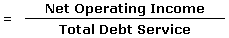

In corporate finance, it is the amount of cash flow available to meet annual interest and principal payments on debt, including sinking fund payments.
In government finance, it is the amount of export earnings needed to meet annual interest and principal payments on a country's external debts.
In personal finance, it is a ratio used by bank loan officers in determining income property loans. This ratio should ideally be over 1. That would mean the property is generating enough income to pay its debt obligations.
In general, it is calculated by:
A DSCR of less than 1 would mean a negative cash flow. A DSCR of less than 1, say .95, would mean that there is only enough net operating income to cover 95% of annual debt payments. For example, in the context of personal finance, this would mean that the borrower would have to delve into his or her personal funds every month to keep the project afloat. Generally, lenders frown on a negative cash flow, but some allow it if the borrower has strong outside income.
{kind=link}